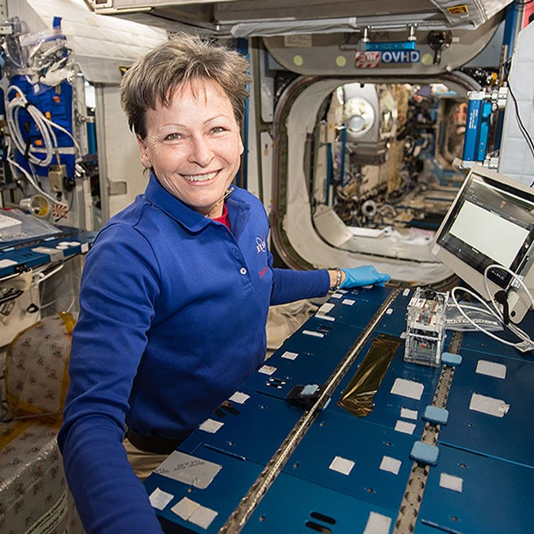
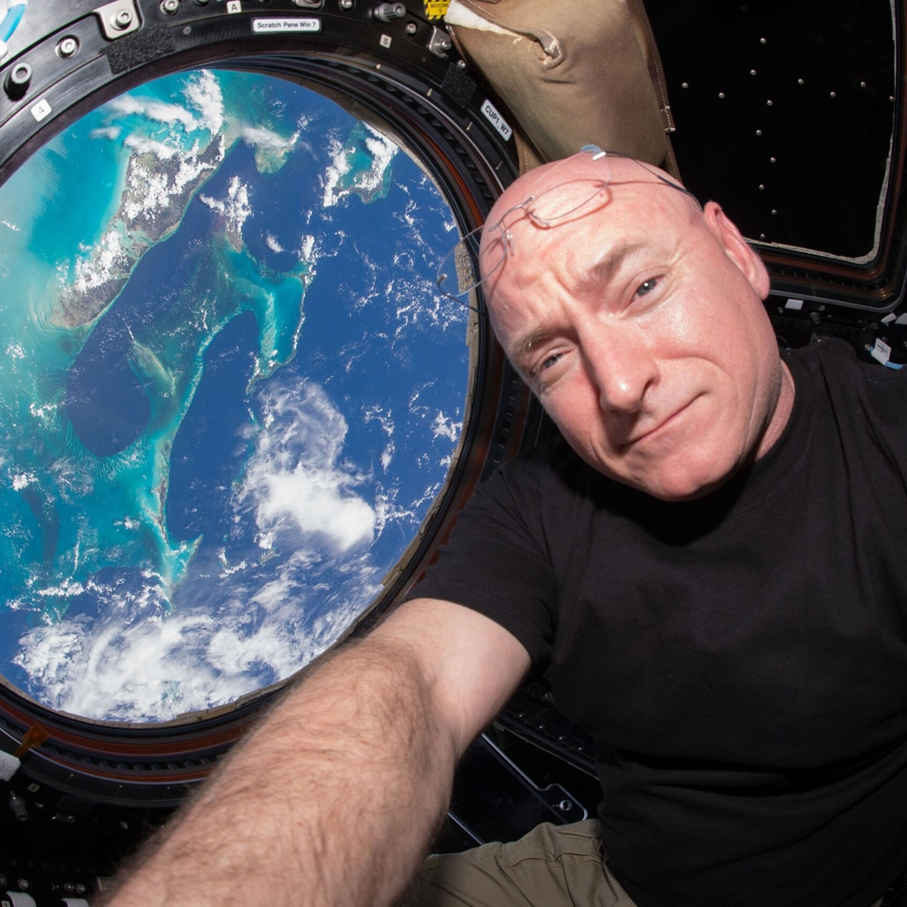
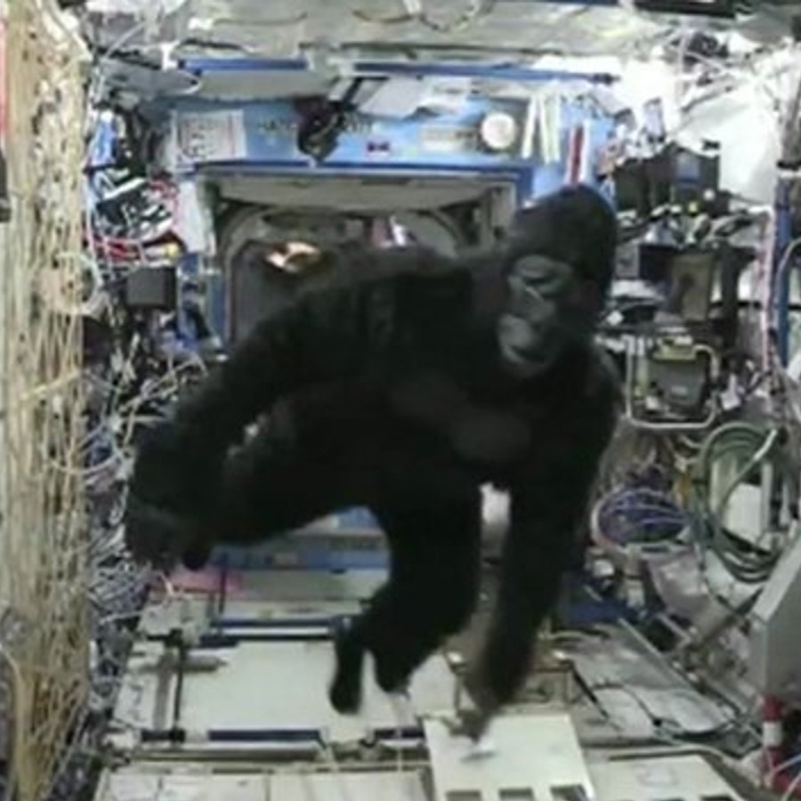

ISS HUNT
Let's begin this voyage!

Peggy Whitson
An American biochemistry researcher that spent 695 days in space!! Her first mission was "expedition 5",
in 2002, and then on her second mission "expedition 6" in 2007-2008 she became the first woman to command
the ISS, she did it again in 2017 and therefore became the first woman to command the ISS twice. Truly inspiring!
Scott Kelly
An American astronaut who commanded the ISS on Expeditions 26, 45 and 46. He spent whole year on the ISS -
learn more about this year
here. Do you recognise the famous gorilla on the ISS? It was him!! He got this gorilla costume
from his twin on his birthday. Hover the photo of him to find out

